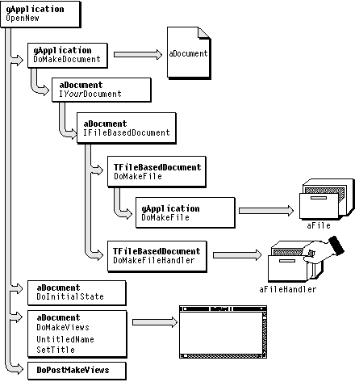
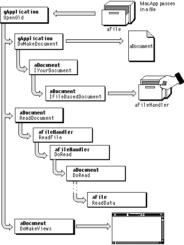
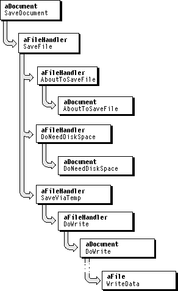

Legacy Document
Important: The information in this document is obsolete and should not be used for new development.
Important: The information in this document is obsolete and should not be used for new development.


Document Operations
MacApp provides built-in machinery for document operations such as creating a new document, opening an existing document, saving a document, reverting to a previous version of a document, and closing a document. You add code to perform operations such as reading and writing your document's specific data and creating views to display that data.MacApp's default behavior is to create a new document when an application is launched. A user can also create a new document by choosing New from the File menu or typing Command-N. The application can also receive an Apple event specifying creation of a new document. In each of these situations, MacApp calls the application object's
OpenNewmethod to create the new document.The
TApplication::OpenNewmethod first calls the application object'sDoMakeDocumentmethod to create a document, then calls several methods of the returned document object, including theDoMakeViewsmethod, which creates views for the document. This process is described in "Creating a New Document," beginning on page 170.Your application class overrides
DoMakeDocumentto make the kinds of documents it needs. This mechanism works for many different types of documents--you overrideOpenNewonly if you want to implement a nonstandard way of creating a new document.How MacApp Document Classes Work With Files
MacApp supports disk-based file operations--reading from disk, writing to disk, checking for disk space to save the document's contents, and so on--through the interaction of three classes:TFile,TFileHandler, andTFileBasedDocument.MacApp supplies the
TFileclass to manage low-level File Manager calls. TheTFileclass contains fields and methods for opening, closing, moving, renaming, and deleting a file, and for performing low-level operations such as getting a volume name or reference number, or setting the creation date or file permissions.You can specify a disk file to the File Manager with three pieces of information: a volume reference number, a directory ID, and a filename. The
TFileclass uses these three pieces of information to identify the file it manages, storing the information in thefFileSpecfield.When a new document based on the
TFileBasedDocumentclass is initialized, theIFileBasedDocumentmethod creates both aTFileobject and aTFileHandlerobject for the document; for an existing document, aTFileobject is passed in toIFileBasedDocument. The document's file-handler field manages disk file access, calling methods of itsTFileobject to make the low-level file system input and output calls. Methods of the file handler also call methods of the document, such asDoReadandDoWrite, passing a reference to theTFileobject to do the low-level reading or writing.A
TFileHandlerobject can be associated with one or more instances ofTFile, allowing the document to store and retrieve data in multiple formats from multiple disk files. MacApp's default behavior, however, assumes one file per document--more complex file handling is left as an exercise for the reader.Kinds of Documents
MacApp defines command constants to allow your application to use a range of open and new commands:
const CommandNumber cNew = 10; const CommandNumber cNewLast = 19; const CommandNumber cOpen = 20; const CommandNumber cOpenLast = 29;MacApp uses the cNew constant for the New menu command in the File menu, but your application can use any value between cNew and cNewLast to specify particular versions of the New command. Similarly, MacApp uses cOpen for the Open menu command, but you can use any value between cOpen and cOpenLast. These menu command numbers are handled in theTApplication::DoMenuCommandmethod.For a command number in the New range,
DoMenuCommandcalls the application object'sDoNewmethod. TheDoNewmethod creates and posts aTNewDocumentCommandobject, which stores the command number in itsfIdentifierfield. TheDoItmethod of the command object calls the application'sOpenNewmethod, passing the command number. TheOpenNewmethod makes the following call to determine the kind of document that should be created:
this->KindOfDocument(itsCommandNumber, NULL)In theTApplicationclass,KindOfDocumentjust returns the command number, which is passed on byOpenNewin a call toDoMakeDocument. Your application class always overridesDoMakeDocumentto create the kinds of documents it knows about. Your application may create only one kind of document, or it may create different kinds depending on the command number passed byOpenNew. Your application class can also overrideKindOfDocumentto return a special value based on the command number. The process of opening a new document is described in the next section.MacApp uses a similar mechanism to open existing documents. For a menu command number in the Open range, the application object's
DoMenuCommandmethod callsDoOpen, which creates aTODocCommandobject. The command'sDoItmethod calls the application'sOpenOldmethod. Like theOpenNewmethod,OpenOldcallsKindOfDocumentbefore callingDoMakeDocument. Opening an existing document is described beginning on page 173.Creating a New Document
When a user creates a new document, the application object calls itsOpenNewmethod, which in turn callsDoMakeDocument. In your application class, you overrideDoMakeDocumentto create the kinds of documents your application uses. (Kinds of documents are described in the previous section.)When the
OpenNewmethod callsDoMakeDocument, the following actions take place, as shown in Figure 7-2:
Figure 7-2 Creating a new document, file, and file handler
- The
TYourApplication::DoMakeDocumentmethod creates an instance ofTYourDocumentand callsIYourDocument. This allows your application to create the type of document it needs, and to perform any special initialization the document requires.- The
IYourDocumentmethod callsIFileBasedDocument.- The
IFileBasedDocumentmethod callsthis->DoMakeFileandthis->DoMakeFileHandlerto create an instance ofTFileand an instance ofTFileHandlerfor the document.

The next section describes how your application can modify the values passed to the
- The
TFileBasedDocument::DoMakeFilemethod callsgApplication->DoMakeFile, giving your application the flexibility to control file creation at the document or application level.- The
TApplication::DoMakeFilemethod makes the following call to the global routineNewFileto instantiate aTFileobject:
NewFile(fMainFileType, fCreator, kUsesDataFork,
kUsesRsrcFork, !kDataOpen, !kRsrcOpen);File forks are described in the next section.
- After calling
DoMakeDocumentto create a new document, theOpenNewmethod calls the document'sDoInitialStatemethod to perform any special initialization.OpenNewcalls the document'sDoMakeViewsmethod to create a window and other views for the document. It then calls the document'sUntitledNameandSetTitlemethods to give the document a title (such as "Untitled 1").- Finally,
OpenNewcalls the document'sDoPostMakeViewsmethod, giving the document a chance to perform any final initialization at a time when all the views have been created.
NewFileroutine (in step 5 above) to change MacApp's default file-handling behavior.How a MacApp Document Uses File Forks
A Macintosh file consists of two parts or forks: the data fork and the resource fork. The data fork generally stores data, and the resource fork stores resources, such as an application's menu resources. Documents generally use the data fork and applications use the resource fork.When you create a document, you specify which file forks your application will use and whether it will keep the forks open. Keeping a file fork open is appropriate if your application must frequently access data in the fork. The default is to use both the data and resource forks, but not to keep them open. The call to
NewFilein step 5 above shows how the default values are set.MacApp defines a Boolean constant for each of the values passed to
NewFile, as shown in Table 7-1.Table 7-1 Table 7-1 Constants passed as parameters to
NewFile
Parameter name Constant name usesDataForkkUsesDataForkusesRsrcForkkUsesRsrcForkkeepsDataOpenkDataOpenkeepsRsrcOpenkRsrcOpenIf MacApp's default file configuration is not appropriate for a particular document type in your application, you can override the
DoMakeFilemethod of the document class. If you want to change the file configuration for all document types used by your application, you can override theDoMakeFilemethod of your application class and pass different values toNewFile.Opening an Existing Document
A user may launch your application by selecting one or more documents in the Finder and double-clicking. When that happens, the operating system sends the application an Open Documents event with a file list containing an entry for each selected document. MacApp opens the documents through a series of calls to the application object'sOpenOldmethod. If the same type of Apple event is sent by a script, it is handled in a similar way.A user can also open an existing document by choosing Open from the File menu or typing Command-O. MacApp presents a standard file dialog to obtain the name of the file to open. If the user chooses a document that is already open, MacApp displays the "Document is already open" message and brings the document's window or windows to the front. If the specified document is not open, MacApp again calls the application object's
OpenOldmethod to open the document.
The
- Note
- The application object calls its
ChooseDocumentmethod to put up the standard file dialog.ChooseDocumentcallsGetStandardFileParameters, which callsGetFileTypeList(both methods of the application) to get a list of file types to display in the file dialog.GetFileTypeListuses only the application'sfMainFileType, but you can override this method if your application uses more than one document type.
TApplication::OpenOldmethod is shown in Figure 7-3, which illustrates how MacApp opens an existing document. It is similar to theOpenNewmethod, in that it first calls the application object'sDoMakeDocumentmethod to create a document, then calls several methods of the returned document object. The main difference is that since it is opening an existing document,OpenOldcalls the document'sDoReadmethod to read the document's data before callingDoMakeViewsto make the document's views. And since theOpenOldmethod already has aTFileobject describing the document to be opened, the document doesn't need to create a newTFileobject.The document, file, and file-handler objects work together with a file stream object (not shown) to read the document's data from disk. File streams are described in "Streams," beginning on page 50.
Creating Views for a Document
When a user creates a new document, opens an existing document, or prints a document from the Finder, MacApp calls the document object'sDoMakeViewsmethod to create a view hierarchy to display the document's data. You override the default implementation ofDoMakeViews, found inTDocument, to create the specialized views used by your documents.In your
DoMakeViewsmethod, you can create view objects by calling thenewroutine and initializing the views procedurally. However, this approach has a significant disadvantage--each time you change the appearance of a view, you have to recompile and rebuild your application.Figure 7-3 Opening an existing document

A better way to define most views is by using a
'View'resource definition in your application's resource file. Then you can use a graphical resource editor to change a view's appearance and the value of its instance variables without having to modify your code. For more information, see "Specifying Views With View Resource Templates," beginning on page 217.Reverting to a Previous Version of a Document
A user can choose the Revert command from the File menu to return the current document to its most recently saved version. The Revert command is handled by the document object'sDoMenuCommandmethod:
The default behavior of the
- The
TDocument::DoMenuCommandmethod creates and posts aTRevertDocCommandobject.- The
DoItmethod of theTRevertDocCommandobject calls the document'sRevertDocumentmethod, then calls itsShowRevertedmethod.- The
TFileBasedDocument::RevertDocumentmethod
- gives the user a chance to confirm before completing the revert operation, since a revert operation is not undoable; if the user confirms, it performs the next two steps:
- calls the document's
FreeDatamethod to free the current document's storage- re-reads the disk version of the document to get the most recently saved version; if there is no disk version,
RevertDocumentinstead calls theDoInitialStatemethod of the document
- The
TDocument::ShowRevertedmethod iterates over all the document's windows, callingShowRevertedfor each window, which in turn callsShowRevertedfor each of the window's views. Some views, such as MacApp'sTTEView, perform calculations or other operations when reverting.
TRevertDocCommandcommand is to send an Apple event specifying the revert document operation, so the reverting is recordable and can be handled by an attached script.Determining Whether a Document Has Changed
When a user closes a document, MacApp examines thefChangeCountfield of the document object to determine whether the document has changed since it was last saved. If the value offChangeCountis greater than 0, the document is considered to be changed.If you specify the document as the command's context when you use a command object to make changes to your document's data, the document's change count is updated automatically when the command's
DoIt,UndoIt, orRedoItmethod is called.However, if you change the document's data through other mechanisms, you need to update the change count directly. You can do so in one of two ways:
When a user closes a document whose content has changed, MacApp displays an alert box with the "Save Changes Before Closing?" message and takes appropriate action based upon the user's choice:
- By calling the document's
Changedmethod. TheChangedmethod decrements the change count for an undo change (cUndo) and increments it for any other change. When the change count is incremented, it is always set to a positive value (a minimum of 1).- By setting the
fChangeCountfield directly through the methodSetChangeCount.
- Save
- Closes the document and saves the changes
- Don't Save
- Closes the document but does not save the changes
- Cancel
- Cancels the close operation
- Note
- You shouldn't normally use a document as a notifier to send messages to other objects through the dependency system. Calling Changed to broadcast a message also marks the document as changed (and in need of saving). Instead, have the document create a separate object that you can use as a notifier hub.
Saving a Document
When the user chooses Save from the File menu, the command is handled by the document object. Saving can be performed as a function of either theTDocumentclass or theTFileBasedDocumentclass. In this scenario, we consider the more common case of saving a file-based document. Saving the document is a cooperative task performed by the document, its file-handler object, and its file object, in the following series of steps:
Figure 7-4 Saving a document
- The
TDocument::DoMenuCommandmethod callsDoSave.- The
TFileBasedDocument::DoSavemethod creates, initializes, and posts aTSaveFileDocCommandobject.- The initialization method of the
TSaveFileDocCommandobject performs any required interaction with the user, such as getting a name for the saved file.- When the command is performed, it creates and sends an Apple event describing the save operation. In this way the operation is recordable and can be handled by an attached script.
- The
DoItmethod of theTSaveFileDocCommandobject calls the document object'sSaveDocumentmethod. Figure 7-4 shows the steps that take place starting with the call toSaveDocument.- The
TFileBasedDocument::SaveDocumentmethod callsaFileHandler->SaveFile.The
TMailableDocumentclass overridesSaveDocumentto write the document's attached letter, if any. MacApp's electronic mail support is described in "PowerTalk Mailers," beginning on page 192.- The
TFileHandler::SaveFilemethod
- if necessary, asks the user for a filename
- calls
AboutToSaveFile, which gives the document a chance to do any special handling before the document is saved- calls
DoNeedDiskSpaceto see how much space the document will take on disk- depending on the file handler's
fHowToSavefield (described in the next section) and on whether there is sufficient room to create a copy of the file, callsSaveViaTemp(the default) orSaveInPlace
- Both
SaveViaTempandSaveInPlacecall the file handler'sDoWritemethod.SaveViaTempattempts to save the file in a new location, so the old file is not deleted until the save operation completes successfully.SaveInPlaceattempts to save the file on top of the current version.- The file-handler object's
DoWritemethod calls the document'sDoWritemethod to write the document's data. Your document class overridesDoWriteto write its own data, and callsInheritedto let its parent document classes write their data.

A MacApp document's
DoWritemethod typically creates a file-based stream (not shown) and calls methods of the stream to write the data. The stream object calls the file'sWriteDatamethod to make the low-level calls that write the data to disk.Saving a Document in Place
When a user saves a document, the document's file handler can use itsSaveViaTempmethod to create a copy of the existing document file before writing the new version or it can use itsSaveInPlacemethod to save the data on top of the old version. Saving with a temporary file is safer since there is always a saved version of the file to fall back on. Saving in place can save a user's changes when there is not enough room to save with a temporary file.MacApp's default behavior is to try to save with
SaveViaTempand, if that is not possible, to ask the user before saving withSaveInPlace. This behavior is controlled by thefSaveInPlacefield of the document's file handler. The default is set in theTFileHandlerconstructor:
fHowToSave = svtAskUser;To change the default behavior, you can set the value offHowToSavein yourIYourDocumentmethod after callingIFileBasedDocument. Here are the possible values forfSaveInPlace:
For example, if you always want to save your document in place, your document's initialization method can change the value of fHowToSave with code like the following:
svtAlways- Always save with
SaveViaTemp. Never overwrite the existing file.svtAskUser- Try to save with
SaveViaTemp. If not possible, then ask user before saving withSaveInPlace.sipAlways- Always save with
SaveInPlace. Never create a temporary file.sipAskUser- Always save with
SaveInPlace, but only if user confirms.
fFileHandler->fHowToSave = sipAlways;Leaving a Document Open
By default, MacApp closes a document when a document window is closed if the window'sfClosesDocumentfield has the valueTRUE. MacApp closes the document when the last open window is closed, even if that window'sfClosesDocumentfield has the valueFALSE. To modify this behavior, you can override theTDocument::CloseWindowmethod in your document class.Closing a Document
Most documents have one or more associated windows. A user typically closes a document by closing its window (or its last open window). A user can close a window by clicking the close box, choosing the Close menu command, typing Command-W, or quitting the application. In each of these cases, MacApp handles basic closing operations automatically. Your document class may have to do nothing more than provide a destructor routine to free any storage allocated by the class.The application may also receive a Close Window or Close Document event from another application or from a script. Or it may receive a Quit Application event from the operating system, from another application, or from a script. Any of these Apple events can lead to document being closed, and again, most of the work of closing windows and documents is handled automatically by MacApp.
The next sections describe MacApp's mechanisms for closing a document.
Closing a Document Directly
When a user closes a window by clicking the close box, choosing the Close menu command, or typing Command-W, MacApp calls the window object'sCloseByUsermethod. If a window'sfClosesDocumentfield has the valueTRUEand that document is file based, callingCloseByUserresults in the following sequence of steps:
- The
TWindow::CloseByUsermethod calls theCloseWindowmethod of the window's document, if it has one.- If the passed window belongs to the document and is the last open window, the
TDocument::CloseWindowmethod calls its ownDoClosemethod; otherwise, it calls the window'sDoClosemethod.- The
TFileBasedDocument::DoClosemethod creates and posts aTCloseFileDocCommandobject.For a
TDocumentobject, theDoClosemethod creates and posts aTCloseDocCommandobject. Both versions set the command object'sfUseAppleEventfield toTRUE. But theTCloseFileDocCommandobject performs additional steps to save the document on disk, including creating a file-handler object.The following steps examine only the
TCloseFileDocCommandclass.- If necessary, the
TCloseFileDocCommand::ICloseFileDocCommandmethod calls the file handler'sRequestFileNameroutine to obtain a name and location for saving the document.- When
TCloseFileDocCommandis performed, it sends an Apple event describing the close operation (becausefUseAppleEventwas set toTRUEin a previous step). This makes the close operation recordable and gives any attached script a chance to handle the operation.- The
TCloseFileDocCommand::DoItmethod
- may call
fDocument->PoseSaveDialogto ask the user to confirm saving the file- may call
aFileDocument->SaveDocumentto save the file (see "Saving a Document," beginning on page 177)- calls
fDocument->CloseAndFreeto close and free the document object (CloseAndFreefirst calls the document'sClosemethod, then itsFreemethod)
- The
TFileBasedDocument::Closemethod may ask the user whether to save the document. It may also callSaveDocumentto save the document, if it wasn't already saved in the previous step. Finally, it callsInherited.- The
TDocument::Closemethod callsCloseAndFreeon each of the document's windows.- Calling
Freeon a document or window object causes the object to be deleted, a process that in turn causes the object's destructor method to be called. The destructor method frees any memory allocated by the object.
Closing a Document With a Close Document or Close Window Event
When an application receives a Close Document Apple event, it dispatches the event to the specified document'sDoAEClosemethod. TheDoAEClosemethod of theTDocumentclass creates aTCloseDocCommandobject; inTFileBasedDocument,DoAEClosecreates aTCloseFileDocCommandobject. In either case, the command is performed immediately. The command closes and frees the document, as described in the previous section. One difference in closing the document with an Apple event is that function overloading is used to specify a different version ofICloseFileDocCommand(orICloseDocCommand)--one whose parameter list includes message and reply Apple events. Another difference is that the command does not send an Apple event when it is performed, since it is already being performed in response to a received Apple event.When an application receives a Close Window Apple event, it dispatches the event to the specified window's
DoAEClosemethod. If the window closes its document (thefClosesDocumentfield has the valueTRUE), the window'sDoAEClosemethod calls the document'sDoAEClosemethod, with the same result described in the previous paragraph.Closing a Document When Quitting the Application
When a user quits the application, the application object'sDoMenuCommandmethod creates aTQuitCommandobject and posts it to the command queue. When the application receives a Quit Application event from the operating system or from a script, the application object'sDoAEClosemethod creates aTQuitCommandobject and performs it immediately. In both cases, theDoItmethod of theTQuitCommandcommand closes and frees all documents and windows before closing the application.A
TQuitCommandobject makes and processes other command objects so that Apple events to close all the open windows and documents will be recorded before the event to close the application. This is done so that a recorded script can be played back and the same actions will happen in the same order, including Save/Don't Save choices and save file locations specified by the user, without having to prompt the user again.The
TQuitCommandperforms the following steps:
- The
TQuitCommand::DoItmethod calls three of its own methods:
DoCloseInWindowOrderDoCloseWindowlessDocuments- DoCloseApplication
- The
DoCloseInWindowOrdermethod iterates through all open windows. If a window has a document, it calls theTQuitCommand::CloseADocumentmethod.CloseADocumentcalls the document'sMakeCloseCommandmethod, then immediately processes the returned command to close the document.After executing the
DoCloseInWindowOrdermethod, all windows are closed and all documents that had open windows are closed.- The
DoCloseWindowlessDocumentsmethod iterates over each remaining document in the application, calling the document'sMakeCloseCommandmethod, then immediately processing the returned command to close the document.DoCloseWindowlessDocumentsdoesn't really care if the document is windowless or not, but all documents with windows should have been closed by now.- Now that all windows and documents have been closed, the DoCloseApplication method creates and processes a
TQuitAppCommandto finish quitting the application.
A Note on Ghost Documents
MacApp's scripting support allows an application to get and set properties of objects, including document objects. In the course of determining the object specified by an Apple event, it may be necessary to count the number of documents. To do so, MacApp works with the application object's document list. However, in some cases the document list may contain a reference to a document that should not be considered when dispatching Apple events. For example, the application may have created a document solely to help in displaying Clipboard data.A ghost document is a document that should not be visible to the AppleScript interface. The
TDocumentclass defines a Boolean field,fIsGhostDocument, to identify ghost documents. If thefIsGhostDocumentfield has the valueTRUE, the document is not considered as a possible Apple event object. MacApp supplies theCNoGhostDocsIteratorclass to iterate over a list of documents, returning only those documents whosefIsGhostDocumentfield has the valueFALSE(the default value).